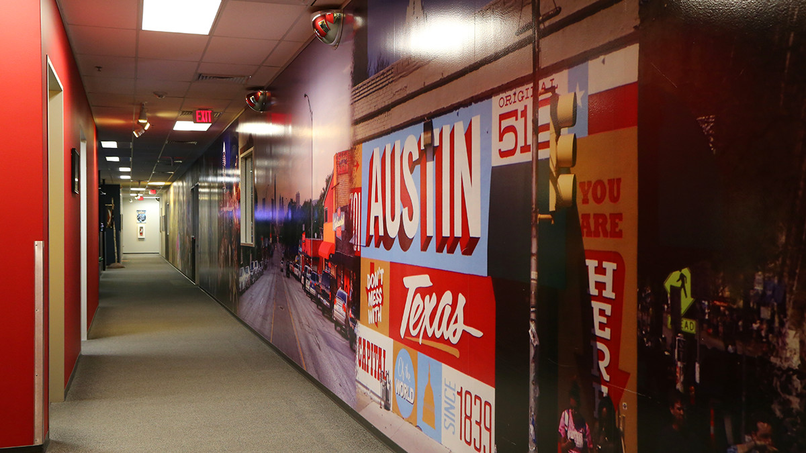
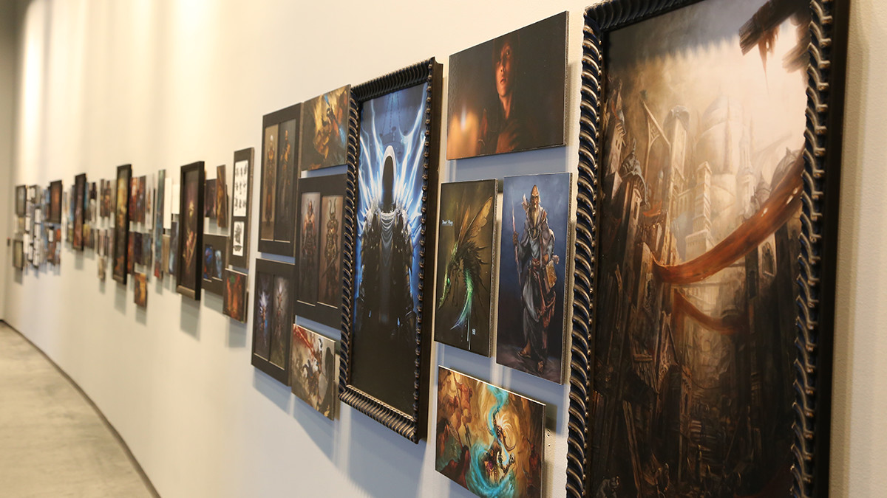

Blizzard Entertainment

I won’t lie to myself, I definitely took it easy coming back from California. I had a large savings built up and was fortunate enough to live with my loving parents rent free. I figured “I’ll get back to work eventually, just not yet.” I took about 5 months off to enjoy time with friends and family. I even reapplied to DXC Technology but was never followed up with. I started to realize that the opportunities I needed weren’t going to be in El Paso. At the suggestion of my Aunt Laura, I decided to call up my cousin, who was a UT Austin student at the time, and formally ask if I could move in with her while I job searched in Austin, TX.
My initial goal was to find a role as either a Quality Assurance tester or developer in one of the many video game studios here in Austin. I quickly realized that I didn’t have the background or experience to land that position at this point. Something I always told myself was that the end of my career would be with a studio as large as Blizzard Entertainment. I had no idea that I would be accomplishing that goal next in my life. A mysterious job listing mentioned being a customer service representative for a high profile gaming studio. The position would be temporary and contracted from the agency known as Randstad.
My heart raced when I found out it was for Blizzard. I absolutely can not screw this one up! For this position, there would be a group interview and we were told to come dressed as casual as possible. Blizzard wanted to get to know the real us. I knew what I had to do, I had to stand out amongst the others and let my passion shine through. This was not the time to be timid. I put on my favorite IGN shirt and showed up to the interview as early as possible, having already scoped out the location the day prior. I was overly eager to answer every question asked of the group. I knew that if I didn’t speak up, I would be overlooked. I also volunteered the fact that I worked for IGN in the past which I discovered later worked to my advantage. The interviewers remembered me as “that IGN guy” and before long, I was in.
Although the only Blizzard game I played was Overwatch, I highly respected the company as one of the influential studios in the industry. Blizzard upholds a level of quality in their products that sometimes they can’t even match. The company is notorious for canceling near-completed games, simply because they don’t believe that the game lived up to the studios’ reputation. This was a major league opportunity yet again.
At the beginning I had a plan to stick with Blizzard for the rest of my career if possible. However, first I would have to transition from a temp to a full-time employee. We were quickly informed that that was a very unlikely scenario. We were hired in order to support the influx of new players that would come with the upcoming release of the World of Warcraft expansion “Battle for Azeroth”.
I wasn’t your average customer service agent. In the World of Warcraft, you are what is commonly known as a Game Master. GMs are the moderators of the world, given unlimited power and access to the massive online multiplayer realms. If I wanted, I could have spawned the rarest of loot for any player or filled their entire wallets with both game currency and real life funds. I could reset or spawn random enemies and manually override even the most difficult of quest objectives. I could also fly freely in-game at any speed, invisible to the players. This meant I could spy on them as well, which was helpful in catching farming bots, cheaters and harassment. It wasn’t always just a policing role however. GMs are also there to help players who were stuck along their quests and drop hints to get them well on their way.
Along with these super powers, I provided support to active players and customers for all games and products offered by Blizzard through a ticket/webchat system. Sometimes, I would have to communicate with two players simultaneously! This is where things got difficult. How could I provide high quality customer service when my attention was split between two different webchat cases?! Using my training in Blizzard’s Game Master specific tools and internal knowledge bases, I rose to the challenge in order to resolve tickets, offer refunds and guarantee the recovery and safety of Battle.net accounts.
I used my training in how to acknowledge a customer's situation, empathize with them, provide a rewarding solution and de-escalate tensions when necessary. At the end of my tenure, I earned one of the highest customer satisfaction ratings, never falling below a positive 90% average. A hard lesson I learned at this time, especially being my first exposure to customer service, was that you can’t please everyone in life no matter how hard you try. Despite a few rough communications, the majority were overwhelmingly positive and I got to hear some of the most touching stories ever. I couldn’t believe gaming impacted some lives as deeply as those that I spoke with during my time at Blizzard. Although I believe I would’ve been promoted to a full time employee, the truth was that I needed to exercise my degree and earn more money in order to make my own living in Austin. The Battle for Azeroth came to an end but a new opportunity with Randstad opened its doors to me.


